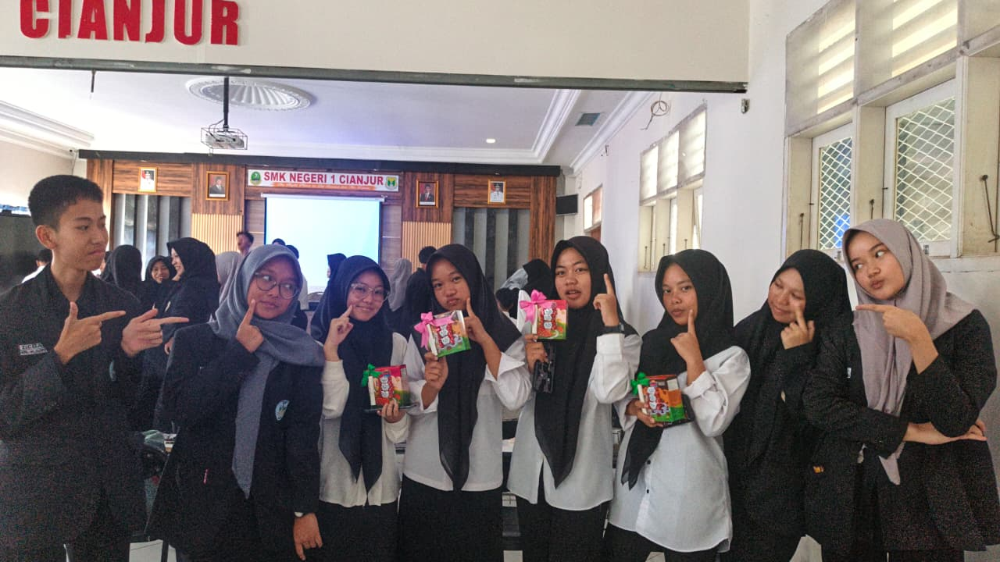
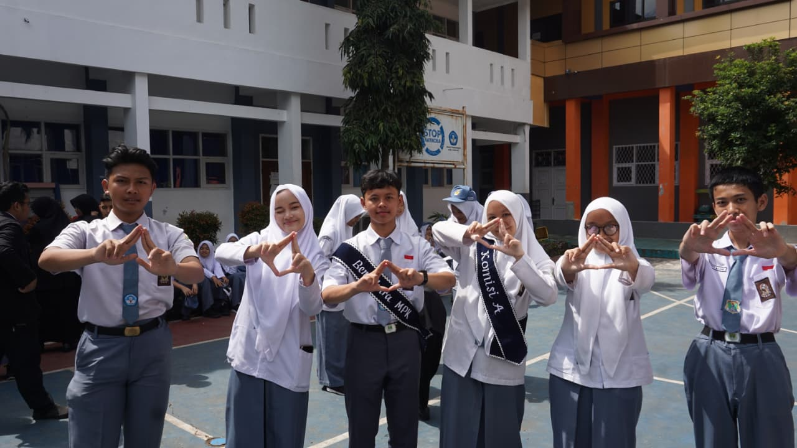
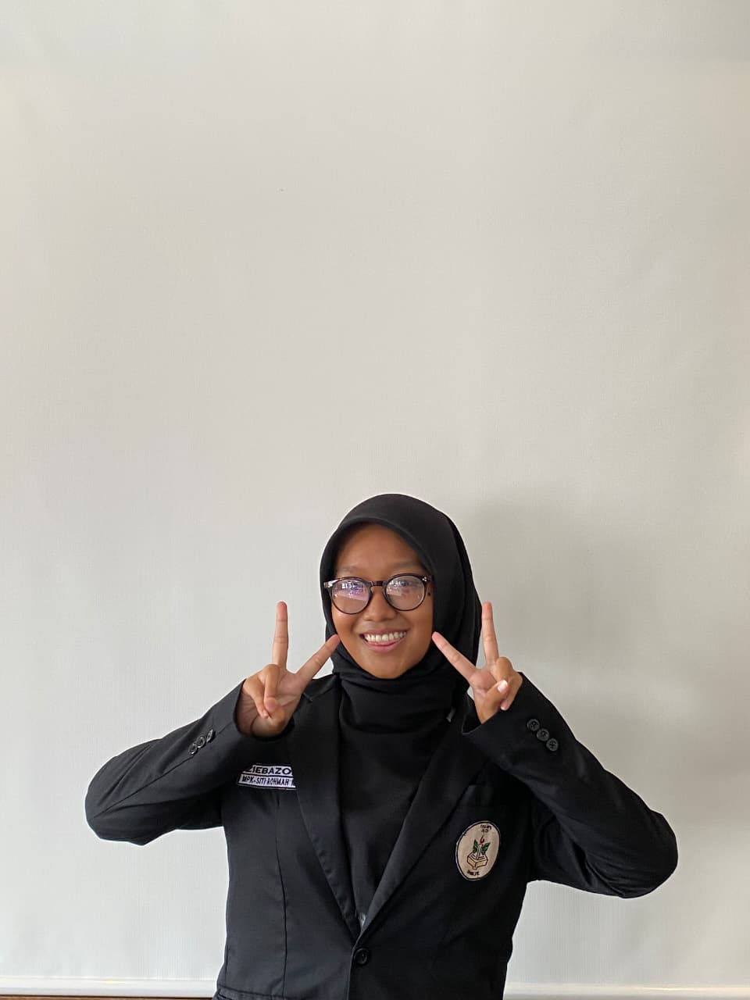
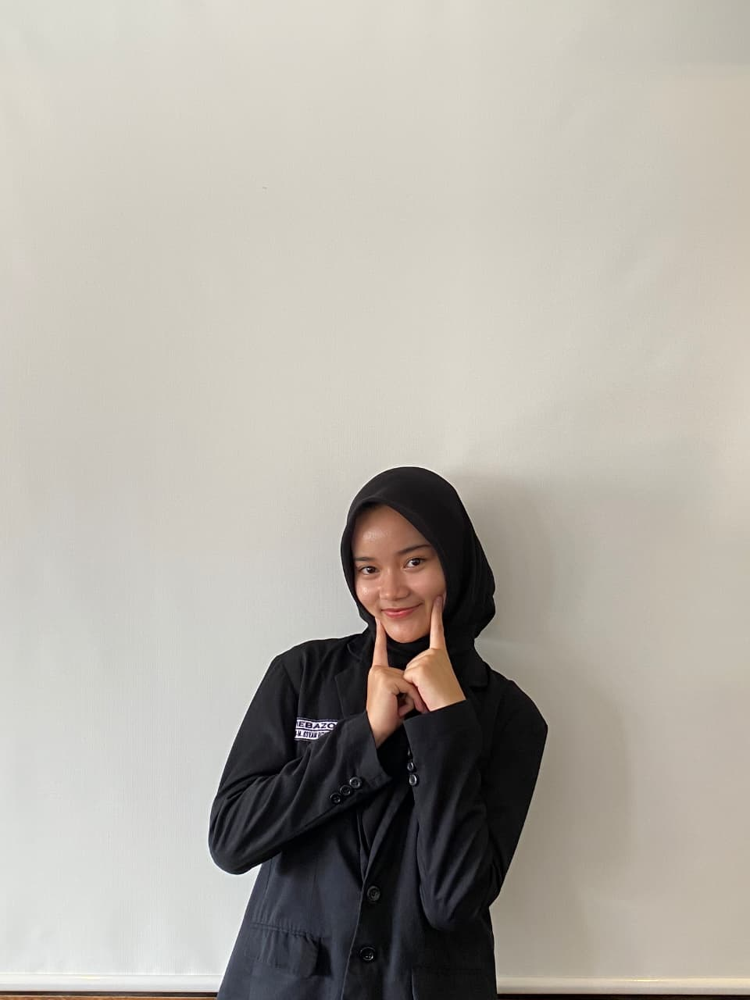
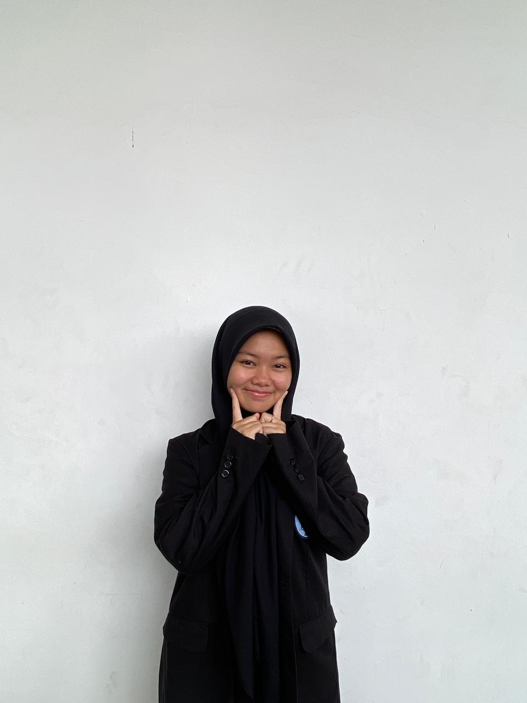
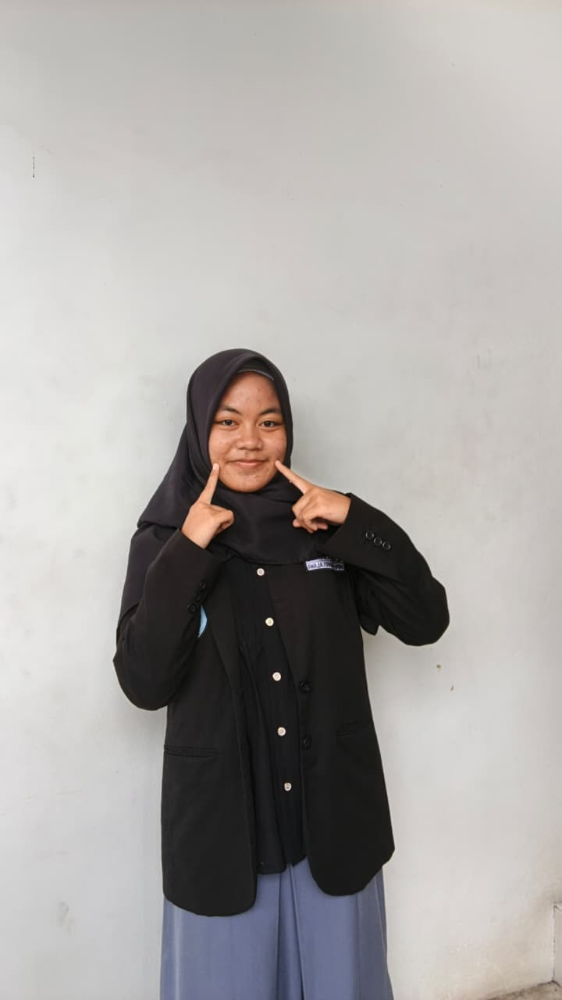
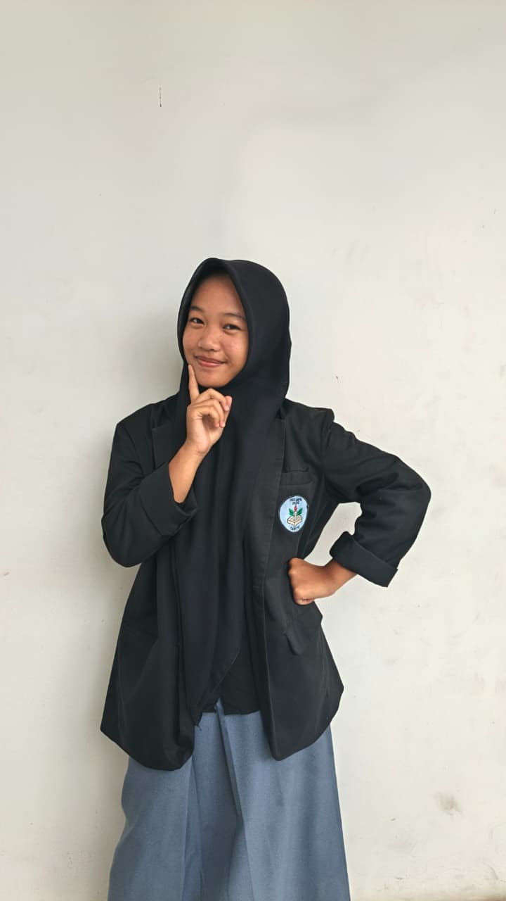
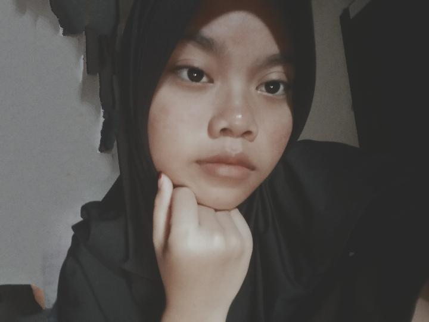

Halaman Pembuka
MPK Komisi A


Kenangan indah bersama kalian akan selalu terukir di hati kami 💖
1 / 8

Muhammad Rofi'i Alawi
Koordinator MPK Komisi A 2026/2027
2 / 8
Zalfa Nurfaizah
Koordinator MPK Komisi D 2026/2027

3 / 8
Sabrina Natasya Ruswandi
Bendahara 1 MPK 2026/2027

4 / 8
Fania Ramdhan
Bendahara 2 MPK 2026/2027

5 / 8

Muhammad Asyraf Rizqullah
Anggota MPK Komisi A 2026/2027
6 / 8
Amsya
Anggota MPK Komisi A 2026/2027

7 / 8
Erika Larisa
Anggota MPK Komisi A 2026/2027

8 / 8
Dinda Yasma
Anggota MPK Komisi A 2026/2027

❤️ Terima Kasih ❤️
Teh Azizah & Kang Nauval,
Kalian berdua adalah bagian penting dari perjalanan Komisi A.
Kepemimpinan, dedikasi, dan kebersamaan yang kalian tunjukkan
akan selalu kami kenang dan ingat atas jasa kalian di komisi A selama periode ini.
Selamat purna dan terima kasih banyak teh Zizah dan kang Nauval!💕😆
Dengan penuh cinta dan hormat,
Dari Pengurus Komisi A baru yaitu 2026/2027
📅 Februari 2026
✨ Semoga sukses selalu! ✨